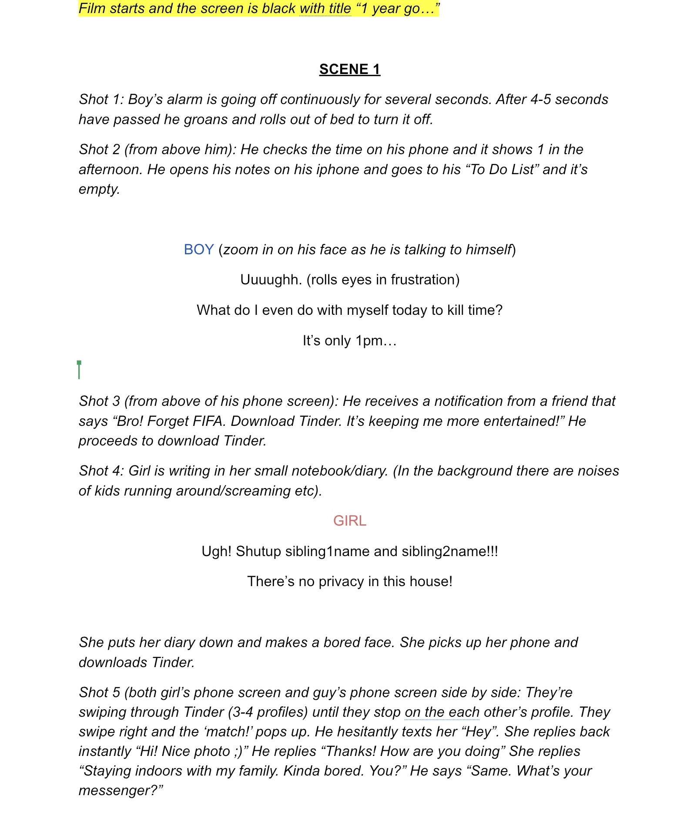
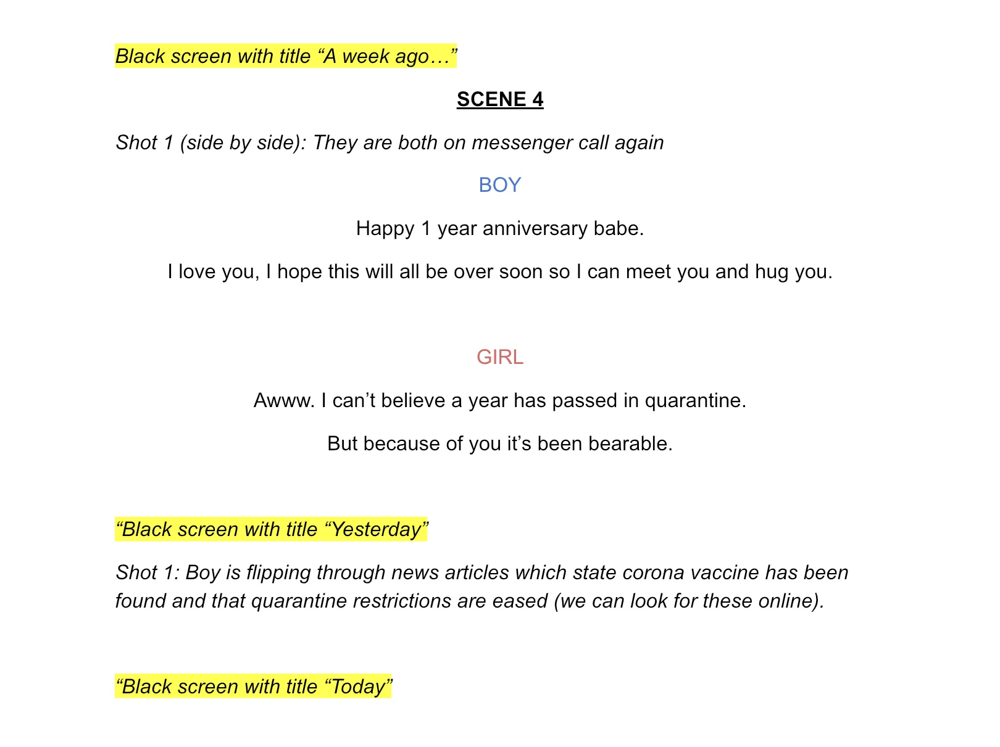
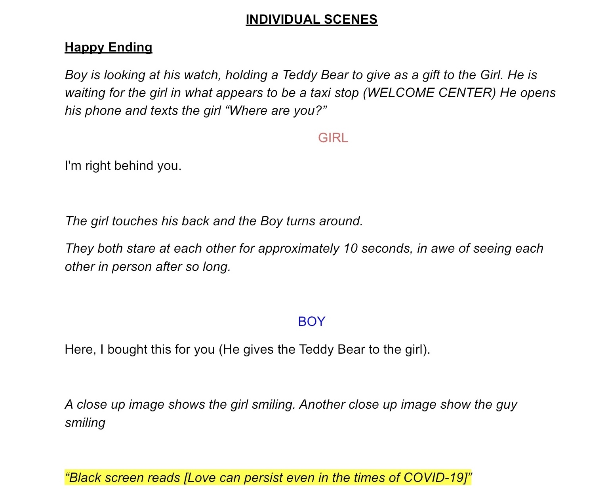

Love in the Time of Corona
1 Love Story, 1 Virus, 2 Endings
By: Amy, Jude, Nimrah, and Junior
Project Description
The coronavirus pandemic has affected the very fabric of day to day life. Thanks to social distancing, most if not all of us are confined to the walls of our rooms. This creates a dependency to foster social interactions through social media and video conferencing platforms. As a result of this, me and my group decided to explore how meeting potential love partners changes because of the pandemic. We created the fictional story of Jessica and Tom, two love birds who met through Tinder and had to maintain a long distance relationship online. After a year of online dating, they finally meet in person and it is up to the user to decide whether or not the relationship succeeds or fails. Based on the user input (yes or no) we displayed a corresponding alternate ending. One where the relationship succeeds and one where it doesn’t thanks to the subtle difficulties of fostering true love because of distance.
Process
We all contributed to the ideation process and in terms of the script itself, I wrote one of the alternate endings (the happy ending). Coming up with a script and an idea was tough as we had to limit all of our ideas to the little equipment we had, the fact that we had to conduct all of our brainstorming sessions online, and creating a story that could possibly involve user input. After a long process of thinking and ideating, I am happy with the script we came up with. Below are some images of our final script. An important caveat is that during filming and editing we realized we had to change one of our alternate endings and some of the actors' lines, hece the subtle mismatches between the script and the film.
  I was also primarily in charge of coding the website as well as assisting with shooting the short film. During filming, our biggest issue was making sure the shots looked nice. Because of a lack of access to proper filming equipment, we had to resort to scrappy techniques like using a lamp for lighting and filming with our phone cameras. The website itself is built using a p5.js canvas in the background. The p5 animation was nontrivial to make as I had to create all the bouncing balls that get reflected whenever they hit one of the walls of the user’s screen. I resorted to an object-oriented programming approach by creating a class called “Circle” that had its own properties that dictated its movement. Also, the image of the Circle object changes based on the user input, a little extra feature I believe contributed to the overall feel of the website. I also relied on Youtube’s API to create a youtube player that displayed the corresponding video based on the user’s selection. The rest of the website was made with vanilla javascript, css and html.
Reflection/Evaluation
Making a film was fun! This was the first film project I made in my undergraduate career and although I had my reservations at first, I had a lot of fun shooting the film and laughing with my project partners whenever a blooper occurred. I wish we could recreate this experience with proper equipment and in-person classes, but I believe we made the best out of a difficult situation with the project’s outcome.